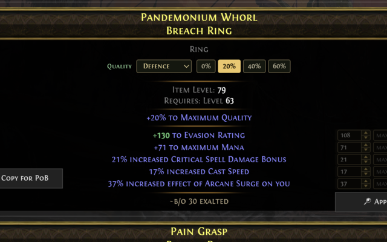

Thanks for updating! Here's what's new — and everything this tool adds to the Path of Exile trade site.
Path of Exile's trade site now uses the same modern layout as PoE 2, so the toolkit works there as well. Two pieces were wired up for PoE 1:
A PoE 2 Mageblood's trade card only prints Legacy of X, never the effect — so hovering a Legacy pops a tooltip (centred over the card) with what it does. If the belt has the corrupted "increased effect per duplicate" mod, the detail shows the maths (matching Path of Building): base · +N% increased effect · = final — e.g. with 1 duplicate at 27%/dup, Legacy of Granite reads "Base +2000 · +27% increased effect = +2540 to Armour". The multiplier applies to every Legacy (not just the duplicated ones), and duplicate copies don't stack their value — the extra copy only raises the multiplier. The duplicate-maths summary stays visible, and duplicated Legacies + the active duplicate-effect mod are highlighted green.
A new CoE button (next to Copy for PoB) copies the item in Craft of Exile's import format. Paste it into craftofexile.com (PoE2) to load the base and have the craftable mods matched automatically.
Apply now adds your filters to the current search and re-runs it without reloading the page — much faster, far lighter on the trade site's rate limit, and the result you filtered from no longer disappears.
The whole toolkit now works on the PoE2 trade site (pathofexile.com/trade2), alongside PoE1. New logo & icons, and patch-0.5 ascendancies and classes in bookmarks.
Below a ring/amulet you'll find a Quality box. Pick a modifier category (Defence, Fire, Attribute, …) and a quality %, and the affected mods rescale live in green so you can see the item at any quality.

Weapon Physical Damage and armour defences show their value projected to 20% quality, so you can compare items at equal quality at a glance.
Every rolled mod gets min/max inputs and an Apply button that builds a stat search from the item.
One click copies a result in PoB import format — paste straight into Path of Building.